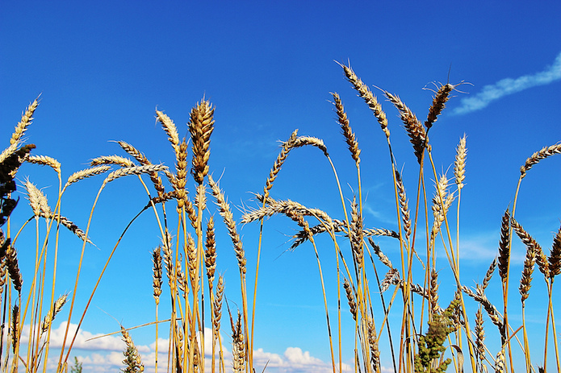

How open data can support land use for the common good
Open data on land could be great for land-based enterprises, but most cannot easily access it. We need to get this data into the hands of people who can use it to improve the environment and people’s lives, says Tom Kenny

From small-scale sustainable farms to community-run woodlands, initiatives using land for social good could be enhanced with better access to open data. CC BY 2.0, uploaded by [Susanne Nilsson](https://www.flickr.com/photos/infomastern/9671353179/in/photolist-fJCdmB-CuEiHV-eWzmsQ-rvExqS-HBxf73-e6TnWv-pj9uU5-8fTUPg-6hbR3u-oWN99t-cUgcMj-8tkzM8-pkWY7R-8RXNzj-6q9vFQ-dXPuWV-6hXDzu-9YinCZ-kYCTrF-83YkxN-fMDspX-9LnMj6-nUMb2y-qsgdbW-7LrEXQ-pr1Y3q-fnMob6-oMsVVE-r6V7Jb-n5FcSR-soA9UN-soKEa6-8qZzwK-8emGRo-58ULwb-pgsGAi-opWoUL-sas694-9dZHYt-kwfPRp-6q5mDH-9j2ci8-pcrCmh-s1Pfaa-6HqTeW-dgEUTf-9LqK1o-6EnBDx-oZ9wp8-f4R1oq “Susanne Nilsson").
Land-based projects need access to key information in order to work properly. More information on land is available now than ever before. In an exciting development, the #OpenDefra programme promised the release of 8,000 government environmental datasets as open data. This data has already been used to improve flood defences, establish optimal positioning for solar panels and identify Roman roads.
At Shared Assets, we look for ways to make life easier for people who want to use land for the common good. Making information more accessible is an important part of this. Most land-based projects in the UK are not managed with much awareness of what kinds of data exists, let alone how to access it. We want to know how to change this, and how to unlock the full value of this data.
Who needs land data?
Open data could be useful to a wide range of land-based projects, but we are particularly interested in ‘common-good’ models. These are developed by groups that use land to pursue social and environmental missions as well as to produce economic value. They might be small-scale sustainable farms, community-run woodlands or parks, or community renewable energy projects. They are innovative and productive, but often lack the skills, time, and resources needed to access and use open data. This deficit in access to information leads to wasted time, less value produced, or even projects failing. We believe the significant value of their work to society and the environment makes it essential to ensure they are supported to access and use open data.
What could open data do for land-based groups?
Wider access to land data could lead to more common-good projects, each with a greater chance of being sustainable and better able to deliver social and environmental value.
The following are some of the ways open data might help land-based groups to develop and manage projects for the common good:
Helping to identify suitable land for projects, quickly and cheaply, by zeroing in on land with the right characteristics and removing the need to conduct expensive surveys
Helping to establish better management plans for land – whether that’s deciding what to plant and where to plant it, or what kind of species and vegetation should be protected
Shaping stronger businesses models by using data on subsidies, and commercial opportunities and restrictions, for example
Getting better access to land data may not solve all the challenges facing common-good land users, but it could help in a lot of areas. Large improvements to access don’t necessarily need to require substantial resources.
Finding the right datasets to meet land needs
At Shared Assets, we have been exploring what information is most needed, what data is available, and how to make it useful. We have consulted a diverse range of land-based groups as well as the organisations releasing open data (including Natural England and The Environment Agency).
The land-based groups described a diverse range of information needs – including things like soil quality, biodiversity, land use, ownership, access to water, proximity to people and landscape characteristics. They also described possible forms in which they would like to access this information. And the organisations releasing the data suggested datasets that might help meet these needs, along with issues that might make data difficult to use.
We ended up with a list of the key needs matched with datasets that might help meet them. We have published this as an open Google sheet, and welcome additional contributions from people familiar with land data.
Our next step is hosting a ‘DataDive’ with the charity DataKind on 18 June. DataKind aim to bring the benefits of the data revolution to social change organisations, and the event will see volunteer data scientists exploring ways of using the land data we have gathered. We hope this will highlight the potential value of this data, and will serve as a prototype and inspiration for further efforts to make it more accessible.
Recommendations for land groups, government and the data community
Better platforms must be developed to give common-good projects access to land data. Data.gov.uk and its variety of intimidating formats are simply not accessible to most land workers. We need to build on efforts like Magic Map, to make this data more easily accessible. If, once we have completed our ‘DataDive’, we think we can build a feasible, sustainable model for such a platform and will seek funding and partners to develop it.
The government needs to release more data. The government is still guarding datasets that could be of huge value to common-good land projects. The Land Registry is a key example, as it contains ownership information on UK land that could be extremely valuable to a variety of sectors. However, rather than opening this up, the government is currently threatening to privatise it, as both the ODI and Shared Assets have blogged about recently. Recent ODI research has shown that data is far more valuable when opened to the world. This evidence must guide the government’s thinking moving forward.
The data community needs to find ways to get data to common-good projects: Our focus is on land use, but this issue is relevant far more broadly. Where open data is released, government and the data community have a responsibility to help make sure it reaches people who can use it to help society, especially where the market is unlikely to supply it to them. DataKind is a great example that needs to be replicated more widely.
Conclusion
Land data can help ensure our land is used to deliver the most social, environmental and economic value that it can. To make this a reality we need not just to ensure that as much of this data is released as possible, but to find ways to get it to the people who can create that value.
Tom Kenny is Research and Policy Officer at Shared Assets, a think-and-do tank that supports the development of new models of managing land for the common good. This work has generously been supported by the Peter Sowerby Foundation. Follow @tomekenny and @sharedassets on Twitter._
If you have ideas or experience in open data that you'd like to share, pitch us a blog or tweet us at [@ODIHQ](https://twitter.com/odihq "@ODIHQ”).